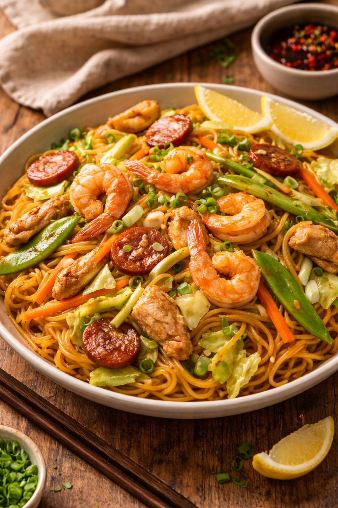

4 Everyday Filipino Dishes
Master these staples and you'll always have a taste of home

Pork Adobo
The unofficial national dish of the Philippines, a savory-tangy braised classic.

Sinigang na Baboy
A comforting sour soup with pork and vegetables, perfect for rainy days.

Pancit Canton
Stir-fried wheat noodles with vegetables and meat, a celebration staple.

Lumpia Shanghai
Crispy fried spring rolls filled with savory ground pork and vegetables.